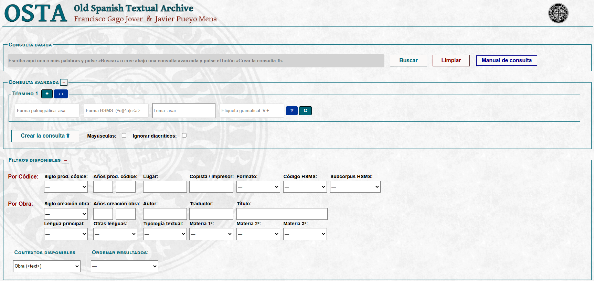

Manual
Old Spanish Textual Archive (2.0)
(última actualización 2026-03-29)
Francisco Gago Jover
F. Javier Pueyo Mena

Hispanic Seminary
of Medieval Studies
Manual Old Spanish Textual Archive ©
2026
is licensed under CC
BY-NC-SA 4.0